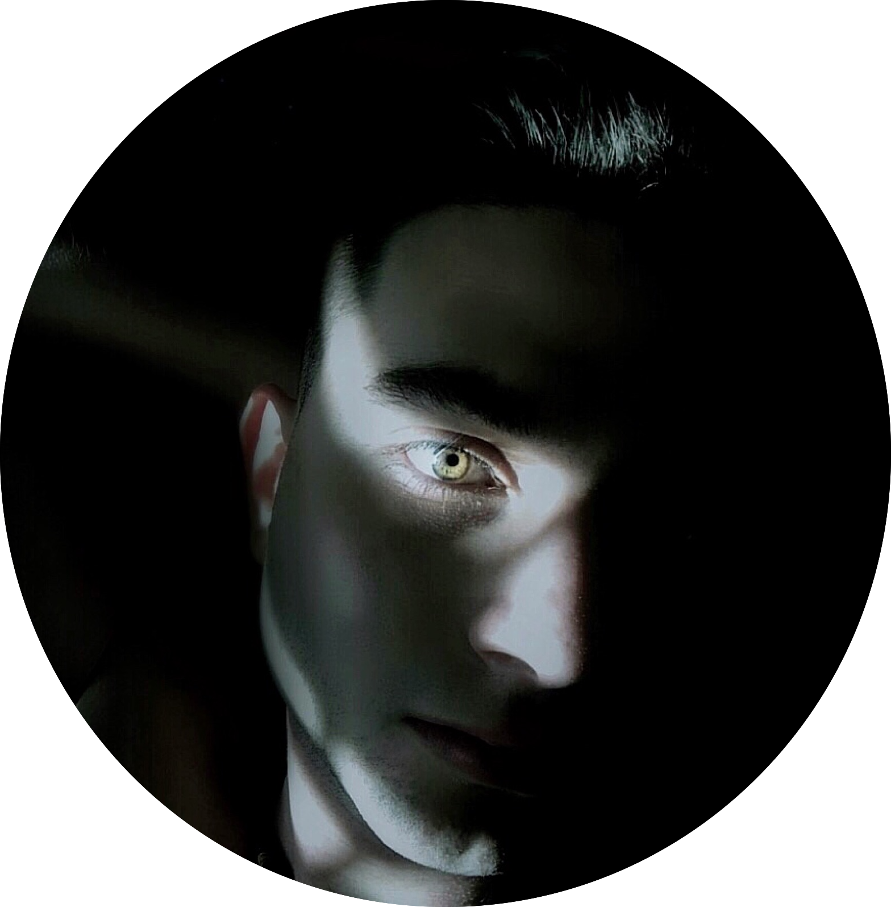
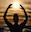
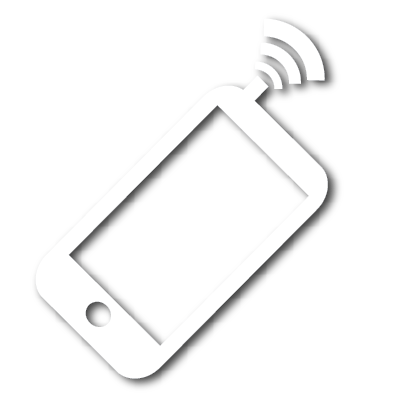

Michael Negraru
Art & Photography
 

negraru96@gmail.com
818.381.9628
Through my quest of exploration, I have had the privilege of seeing marvelous places and meeting beautiful people. While photography was always a hobby of mine, I decided to monetize it and make a small business in October 2018. Mostly gaining work through word of mouth, I met many folks and learned many things through this path. I have also been told that my artwork grew in quality over time. I realized that there are too many great moments to capture in photography, so I have an inability to specialize in just one form. In my gallery, you will see my work of people, places, food and events. I’ve taken gigs with chefs for food showcasing, models for special sets, Artists for musical covers and visuals. I also use my knowledge in graphic design to make outstanding pieces and blowups for those that want unique art done for them.